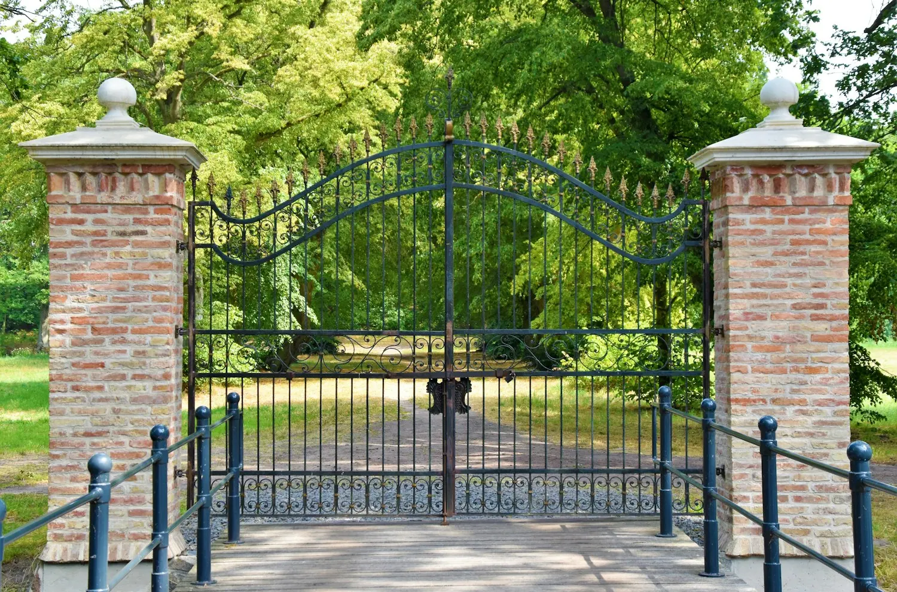
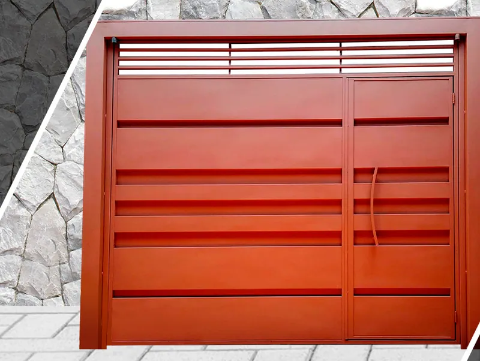
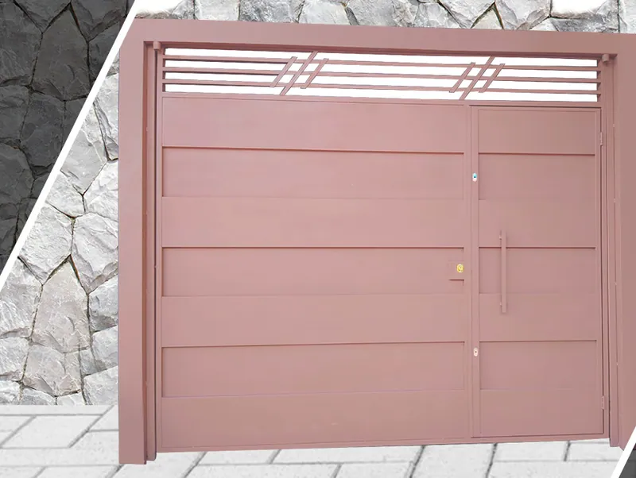
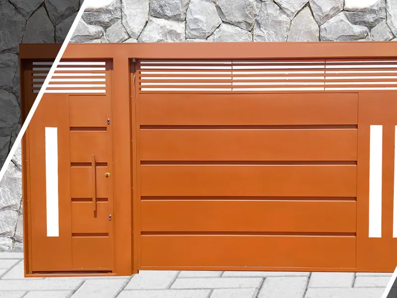
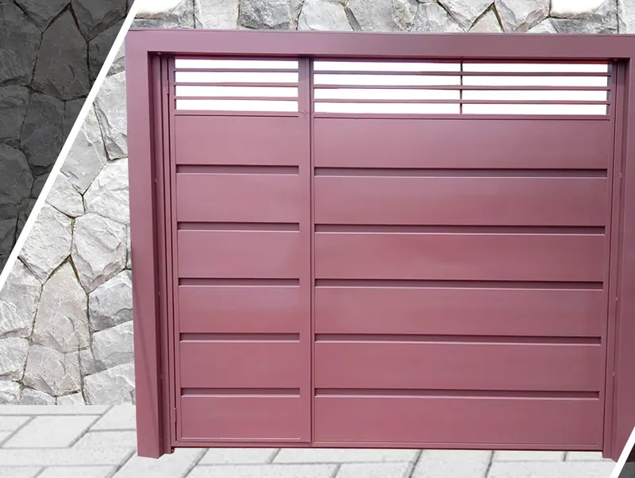
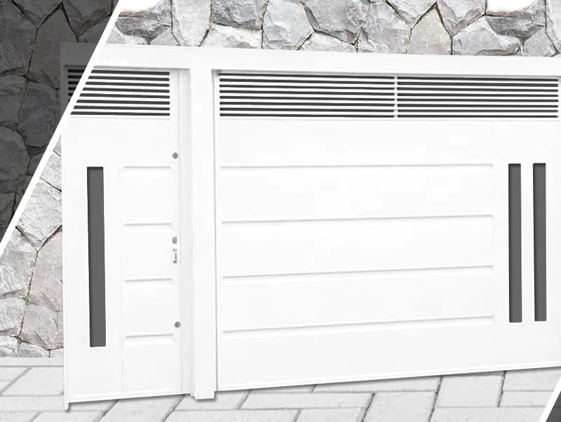

Especializada na fabricação de portões de ferro em aço carbono, com mão de obra especializada e equipamentos de última geração. Solicite uma visita grátis: tiramos todas as medidas e o orçamento sai em menos de 24 horas.

Trabalhos
Portões automáticos ou eletrônicos, de garagem basculantes ou deslizantes, em ferro ou aço galvanizado. Fornecemos também a linha de acessórios: motores, travas elétricas e fechaduras.





Manutenção
Fazemos manutenção preventiva e corretiva em portas de aço de enrolar, manuais ou automáticas. Se o problema é hoje, chame no WhatsApp.
Onde atendemos
Ribeirão Preto e mais 52 cidades num raio de até 200 km, entre elas Araraquara, Franca, São Carlos, Sertãozinho, Jaboticabal e Taquaritinga.
Somos uma empresa preocupada com o meio ambiente e temos compromisso qualificado para descarte e reciclagem dos nossos resíduos.
Nosso compromisso
Fabricamos e instalamos portas e portões com muitos anos de experiência e soluções para você.
Lopes SerralheriaSomamos mais de 20.000 clientes satisfeitos com o nosso trabalho. Seja você também mais um cliente que faz parte dessa parceria.
Lopes SerralheriaUm portão de ferro que vai agregar valor ao design do seu imóvel, com orçamento em menos de 24 horas.
Lopes SerralheriaContato
Vamos até você, tiramos todas as medidas e devolvemos o orçamento em menos de 24 horas.